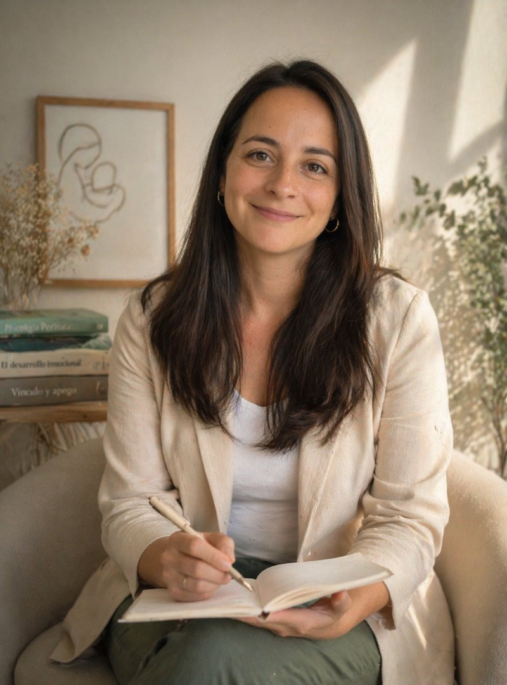

Basado en evidencia
Integro enfoques cognitivo-conductual, sistémico y específicos en salud mental perinatal, con protocolos clínicos validados para cada área.

La maternidad transforma la identidad, el cuerpo, los vínculos y la relación con el mundo. También activa historias personales antiguas que muchas veces no estaban nombradas.
Mi trabajo consiste en ofrecerte un espacio clínico donde eso que está ocurriendo pueda pensarse, decirse y transformarse —a tu ritmo y con el cuidado que merece.
"En salud mental perinatal,
el tiempo de consulta es
parte del tratamiento."
Pontificia Universidad Católica de Chile.
Práctica clínica en Hospital Clínico UC.
Universidad de los Andes · Chile.
Con enfoque en la salud mental materna y el vínculo temprano.
PUC · Mención Salud Mental Perinatal.
Tesis sobre intervenciones breves en depresión posparto.
Postpartum Support International · Certified Perinatal Mental Health Professional (PMH-C training).
Av. Las Condes 7700, Las Condes · Santiago. Atención online en todo Chile.
Miembro Col. Psicólogos Chile · Reg. 12.847.
Integro enfoques cognitivo-conductual, sistémico y específicos en salud mental perinatal, con protocolos clínicos validados para cada área.
Creo que la escucha cuidada es la primera intervención. Las sesiones respetan el tiempo que cada historia necesita, sin atajos ni recetas.
No hay una única forma "correcta" de vivir la maternidad. Mi consulta es un espacio donde puedes hablar con honestidad, incluso de lo que cuesta decir.
El proceso clínico se construye contigo. Trabajo con transparencia sobre objetivos, enfoque y tiempos, y coordino con tu equipo de salud cuando corresponde.
La consulta está ubicada en Providencia, Santiago, en un edificio residencial discreto, con acceso independiente y estacionamiento cercano. El espacio está diseñado para la intimidad clínica: luz cálida, aislación acústica, cambiador disponible y sala de espera reservada.
Reservar primera sesión →Si algo de lo que leíste te resonó, consulta. Una primera sesión basta para saber si este es el espacio que buscas.